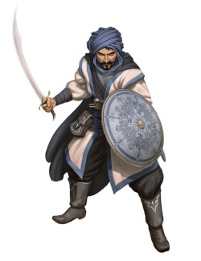
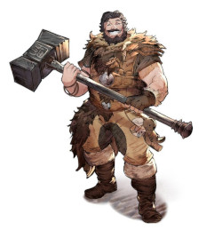
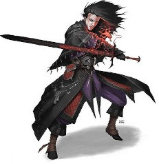

Nesse artigo, vou te mostrar todas as classes de um dos jogos de RPG mais famosos, o D&D (para saber mais sobre Dungeons and Dragons, clique aqui🔗). Bom, as classes desse jogo fucionam como as profissões dos nosso personagens (o conceito classe não é igual a raça 🔗)
Quais são as melhores classes de D&D para se começar a jogar? E Mais, quais são as classes que são mais complexas para os novatos?
Vamos analisar aqui por ordem de facilidade todas essas questões.
Guerreiro:

Motivos para experimentar: Mecânica simples, sem feitiços complicados
O Fighter é o seu típico aventureiro de pão com manteiga, um emblema que muitas vezes os rotula como ‘chato’ ou ‘baunilha’ quando comparado a outras classes.
Não se deixe enganar, porém, pois os lutadores têm o mesmo potencial para se tornar um personagem impressionante ao longo de uma campanha, ao mesmo tempo em que oferecem as mecânicas mais fáceis de jogar como uma classe de D&D para iniciantes.
Dentro do jogo, qualquer personagem pode fazer um ataque físico com uma arma, seja um bastão, uma espada ou até mesmo apenas as próprias mãos, e esse será seu movimento básico como lutador.
Não há confusão ou feitiços complexos – basta rolar para atacar e distribuir o dano de sua arma. Como tal, os guerreiros estão sob a designação de classe ‘marcial’ (embora os arquétipos/subclasses marciais dos guerreiros também permitam que os jogadores conjurem algumas magias do nível 3).
Mas para alguém que precisa de tempo para aprender a mecânica básica de D&D? Um lutador é a escolha ideal.
Assista a vídeo acima para mais explicações, e acesse nosso artigo expecifico sobre o Fighter 🔗.
Bárbaro:

Motivos para experimentar: Fácil de lidar com a mecânica e inclui a divertira fúria.
Se você quer a simplicidade de uma classe marcial para acertar as coisas, mas com uma sensação diferente, então jogar como um Bárbaro pode ser o ideal.
Você obtém muitas das mesmas habilidades que um Guerreiro, só que fica com tanta raiva que ocasionalmente fica com uma fúria sanguinária que lhe dá algumas vantagens adicionais ao atacar (como bônus em testes de Força e um aumento em quaisquer jogadas de dano que usem Força).
Você não pode usar a mesma armadura pesada que os lutadores, mas essa raiva tem o benefício adicional de torná-lo muito difícil de matar, dando-lhe resistência à maioria dos danos físicos.
Os bárbaros também têm uma defesa não blindada que aumenta sua CA (classe de armadura) com estatísticas adicionais, para que você possa bater forte sem se preocupar muito com a força do inimigo.
Assista a vídeo acima para mais explicações, e acesse nosso artigo expecifico sobre o Bárbaro 🔗.
Bruxo:

Motivos para experimentar: Fácil de gerenciar as opções de magia com ataque mágico grátis.
talvez você goste de jogar feitiços em seus jogos favoritos, e a ideia de apenas balançar uma espada não tem muito apelo.
Boas notícias!
Warlocks oferecem a porta de entrada mais fácil para lançar feitiços em D&D, pois são relativamente descomplicados em comparação com classes como Magos ou Clérigos.
Embora você tenha uma lista de feitiços para escolher, isso é menor do que a maioria dos outros conjuradores ‘puros’, e você só tem dois espaços de feitiço para se preocupar.
Felizmente, eles serão reabastecidos com um descanso curto, em vez do descanso longo exigido por outras classes (se esses termos são novos para você, não se preocupe – eles são pitstops que permitem recarregar suas habilidades).
E como a ação mais comum que você provavelmente fará como Warlock – o truque Eldritch Blast – é grátis, não há pressão de que você se tornará inútil se não puder ficar de olho em quantos slots restam.
Apenas fique longe, continue atirando no inimigo e leia o resto de seus feitiços para ver se algo pode ser útil mais tarde.
Embora existam muitas camadas adicionais que você pode adicionar a um Bruxo (como talentos e itens mágicos, assim como você pode com qualquer classe de D&D para iniciantes nesta lista), sua mecânica principal é muito mais fácil de lembrar do que muitas das complexidades que você terei com outros conjuradores.
Claro, eles geralmente são rotulados como malignos porque obtêm seus poderes fazendo um acordo com patronos poderosos, como um Demônio ou um Grande Velho Cthulhu, mas como você escreve o comportamento de seu personagem depende inteiramente de você.